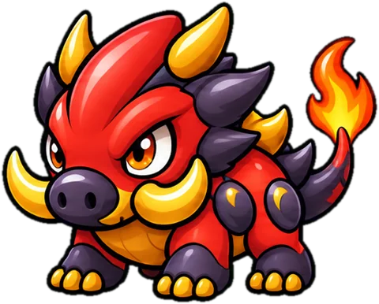

 FireDark
FireDarkTap a stage to read its story.
Emblazon is a stocky, dark-coated young beast with crimson and black armored plates beginning to form along its flanks and a single plume of fire rising from its back like a candle. Its eyes glow bright amber-orange, and its short blunt horns point stubbornly forward. It stands with feet planted wide, already practicing the defiant posture it will master later in life. In the shadow caves it trots between the pillars of obsidian, drawn to the faint warmth of volcanic vents deep underground. When challenged, it headbutts the nearest wall and ignites a small fire.
Field note: Emblazon marks its territory by pressing its horns to the cave wall and scorching a ring of soot - you can tell its age by counting the rings.
Shadow Caves. Emblazon and its family are found in the Shadow Caves. See everyone who lives there.
Share a Bond Food that matches its types to become friends. Emblazon loves:
A Bond Food is not a trick. It joins your spirit with the Kimuro's spirit, and only when it chooses you.
Print the Kimuro adventure packs: mazes, cards, a board game and Bond Mark medals.
See the printable packs